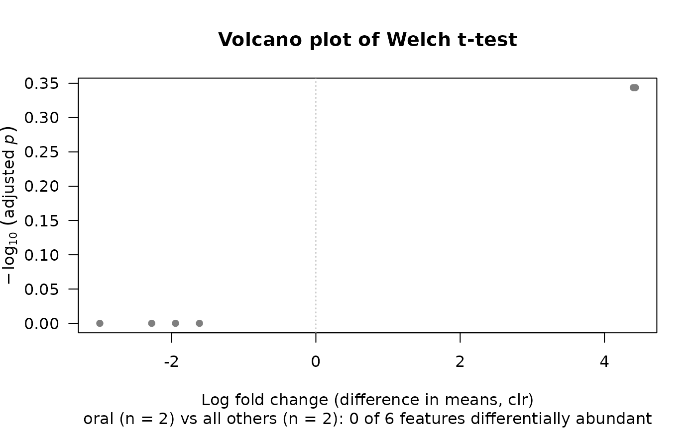
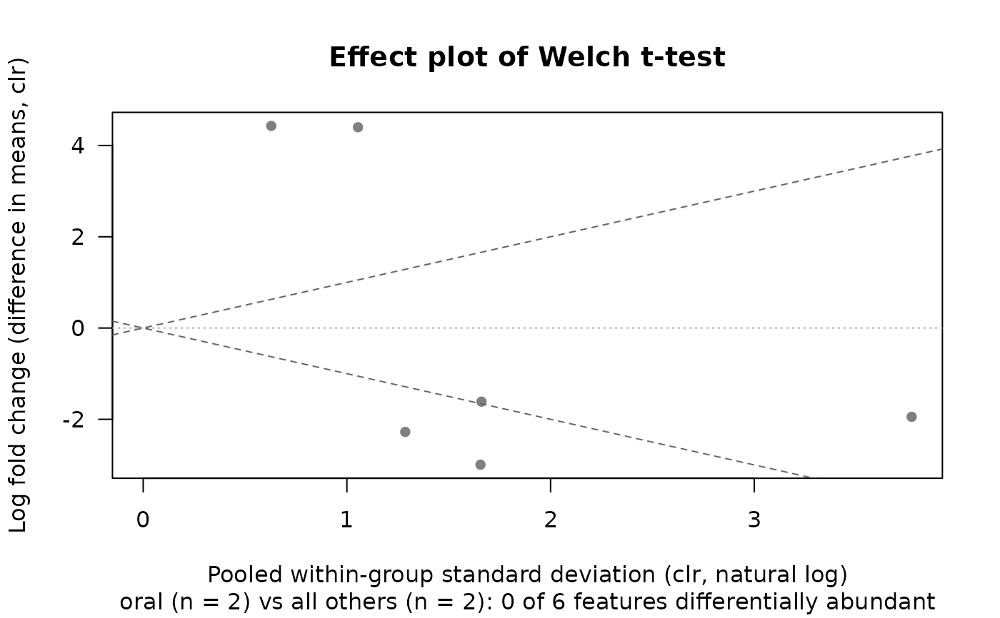
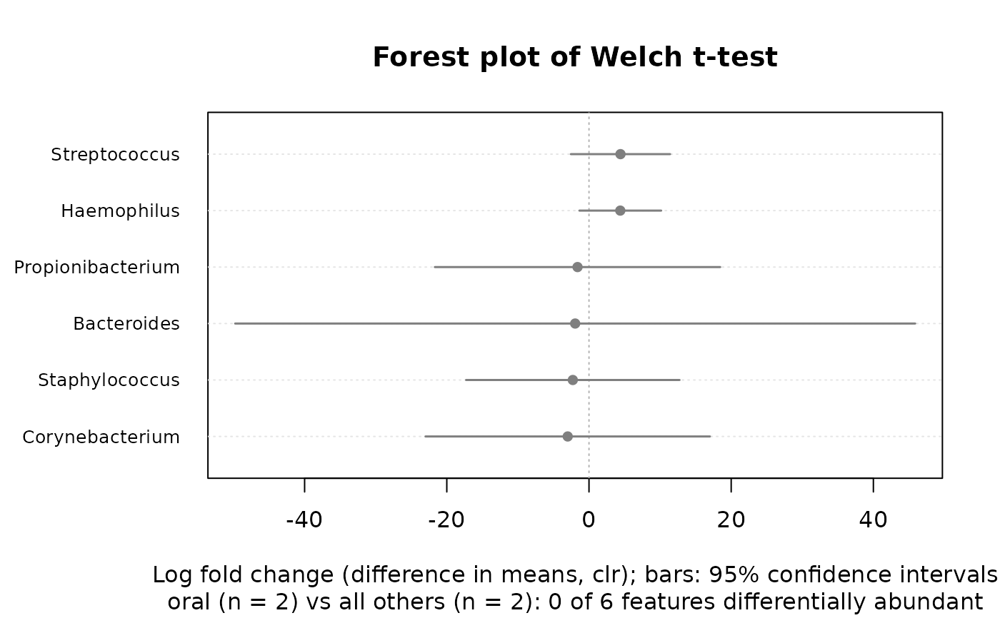
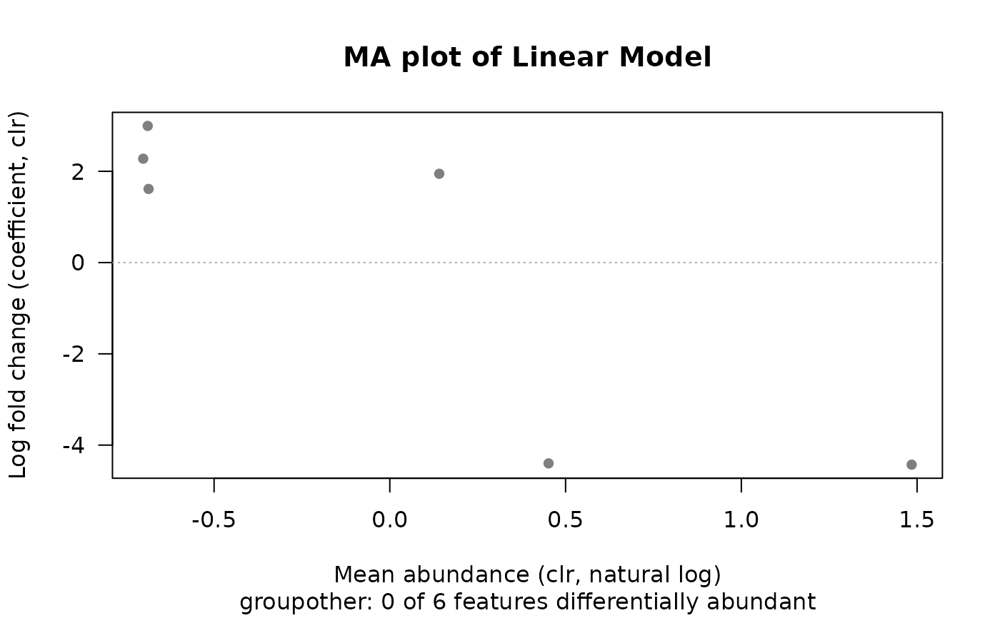
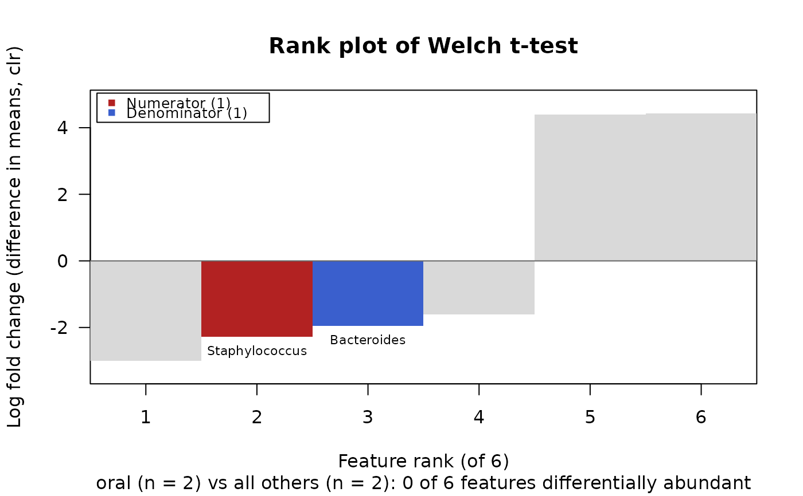

Views of the results of da_wilcoxon(), da_ttest() or da_lm(), each
feature a point (or a row), with the features declared differentially
abundant (reject = TRUE) highlighted and the most significant of them
named:
Usage
# S3 method for class 'ecodive_da_ttest'
plot(
x,
type = c("volcano", "effect", "ma", "forest", "rank"),
labels = 10,
n_features = 30,
numerator = NULL,
denominator = NULL,
...
)
# S3 method for class 'ecodive_da_wilcoxon'
plot(
x,
type = c("volcano", "ma", "rank"),
labels = 10,
numerator = NULL,
denominator = NULL,
...
)
# S3 method for class 'ecodive_da_lm'
plot(
x,
covariate = NULL,
type = c("volcano", "effect", "ma", "forest", "rank"),
labels = 10,
n_features = 30,
numerator = NULL,
denominator = NULL,
...
)Arguments
- x
The result of
da_wilcoxon(),da_ttest(), orda_lm().- type
The plot:
"volcano"(the default),"effect","ma","forest", or"rank"(forda_wilcoxon(),"volcano","ma"or"rank").- labels
How many of the differentially abundant features to name (in the volcano, effect and MA plots), those with the smallest adjusted p-values. In the rank plot, the highlighted features with the largest effects. Default
10;0for none.- n_features
For
"forest": how many features to show, those with the smallest adjusted p-values (ties in the table's order). Default30;Inffor all.- numerator, denominator
For
"rank": the features to highlight as the numerator (red) and denominator (blue) of a log ratio, such as those thatlog_ratio_features()picks: their names, their indices among the result's features, or a logical vector with one value per feature, as forlog_ratio(). They must not overlap.- ...
Passed on to
graphics::plot.default(), such asmain,sub,xlab,xlimorcex.- covariate
For
da_lm(): which covariate's coefficients to plot, as named in the result'scovariatecolumn (such as"statusmoderate"or"age"). Defaults to the first column of the term of interest (groups), or else to the first covariate that isn't the intercept.
Details
"volcano"(the default): the effect against the adjusted p-value."effect"(da_ttest(),da_lm()): the effect against the within-group standard deviation (Gloor et al. 2016; ALDEx2's"MW"plot)."ma": the effect against the mean abundance (ALDEx2's"MA"plot)."forest"(da_ttest(),da_lm()): the effects and their confidence intervals of then_featuresmost significant features, largest at the top."rank": every feature's effect, sorted (see Rank plots).
The effect is the difference in medians (da_wilcoxon()), in means
(da_ttest()), or the coefficient (da_lm()), in the units of the
result's norm: a log fold change for 'clr', 'rclr' and 'log'
(natural logs, from the log_base attribute), a difference in
proportions for 'percent'.
Volcano plot. The y axis is \(-\log_{10}\) of
p_adjusted(an adjusted p-value of 0 is drawn at the smallest positive double), with a dashed line atalpha.Effect plot. The x axis is the within-group dispersion:
da_ttest()'spooled_sd, orda_lm()'sresid_sdattribute (the residual standard deviation, which for a model of one two-level factor is the pooled within-group standard deviation). The dashed lines are \(y = \pm x\): features beyond them differ between the groups by more than they vary within them. Forda_lm(), only a covariate whose design column is 0 or 1 (a factor's level against its reference) has one; use"ma"or"forest"for others.MA plot. The x axis is the feature's mean transformed abundance: the
meancolumn (da_wilcoxon(),da_ttest()) or attribute (da_lm()).Forest plot. Points at the effects, bars over their confidence intervals (
ci_lower,ci_upper, at the result'sconf_level, not adjusted for testing many features).
Features whose values are NaN are left out. The subtitle names the
comparison and counts the features rejected.
Rank plots
A rank plot (type = "rank") draws every feature as a bar from 0 to its
effect, sorted from the smallest at the left to the largest at the right
(ties in the result's order), as Qurro's rank plot does (Fedarko et al.
2020, doi:10.1093/nargab/lqaa023
). With relative abundances, every
feature's effect is known only up to a shift shared by all of them, the
unknown change in the total (Morton et al. 2019,
doi:10.1038/s41467-019-10656-5
): the ranking is what the data show, and
the log ratio of features from its two ends can be read without knowing
the total. Pick them with log_ratio_features(), show where they sit
with numerator and denominator, and plot their log ratio sample by
sample with plot.ecodive_log_ratio().
Without numerator or denominator, the differentially abundant
features (reject = TRUE) are drawn dark and the others light; with
them, the numerator's bars are red and the denominator's blue, with a
legend. The labels highlighted features with the largest effects are
named. Features with no estimate (NaN) are left out and counted in
the subtitle; for a model result, the bars are covariate's effects.
References
Gloor, G. B., Macklaim, J. M., & Fernandes, A. D. (2016). Displaying variation in large datasets: plotting a visual summary of effect sizes. Journal of Computational and Graphical Statistics, 25, 971-979. doi:10.1080/10618600.2015.1131161
Examples
x <- ex_counts + 1
grp <- c('oral', 'oral', 'other', 'other')
res <- da_ttest(x, grp)
plot(res)

plot(res, 'effect')

plot(res, 'forest', n_features = 10)

plot(da_lm(x, groups = grp), type = 'ma')

plot(res, 'rank', numerator = 'Staphylococcus', denominator = 'Bacteroides')
